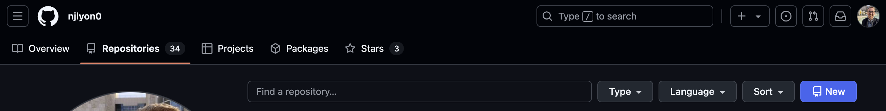
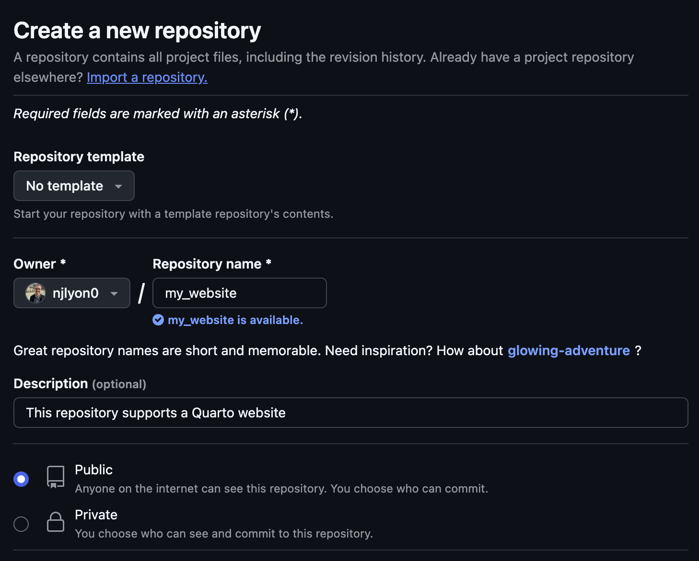
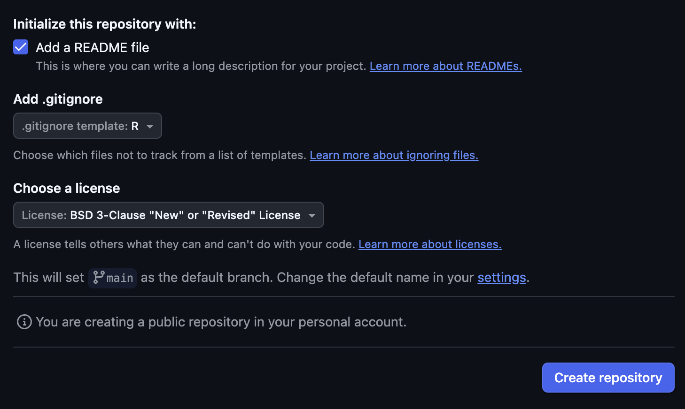
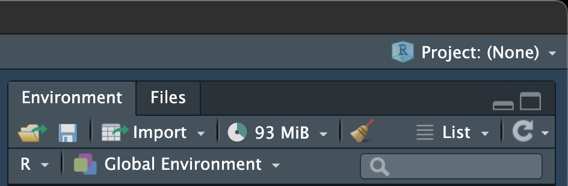
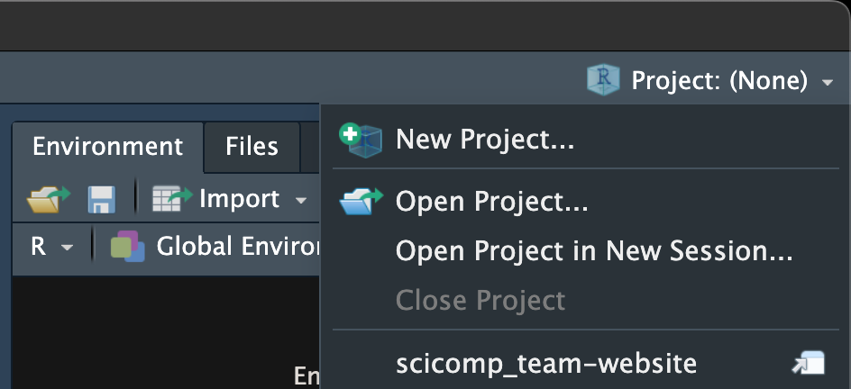
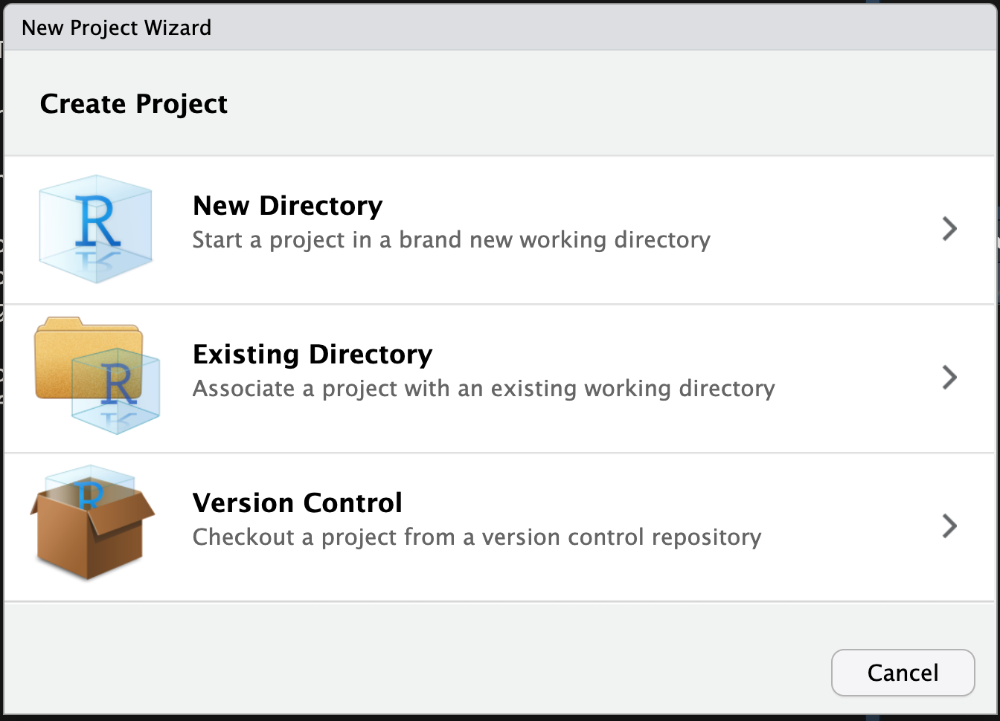
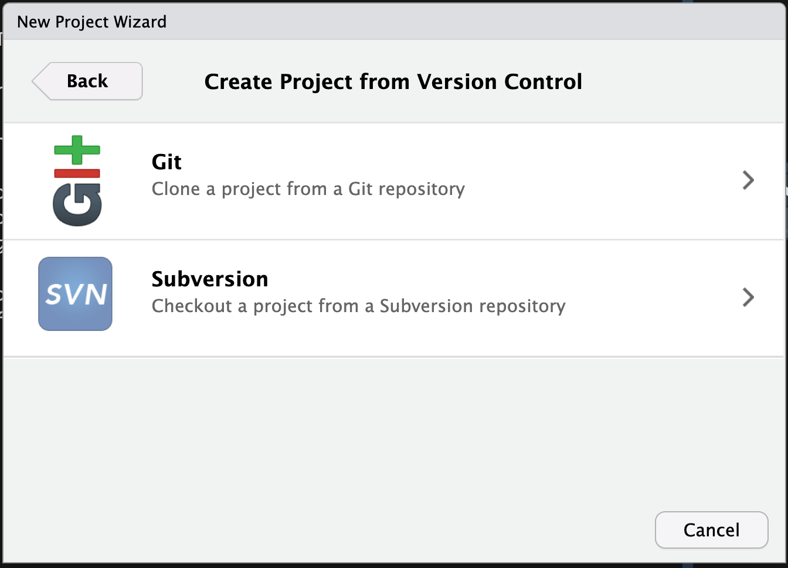
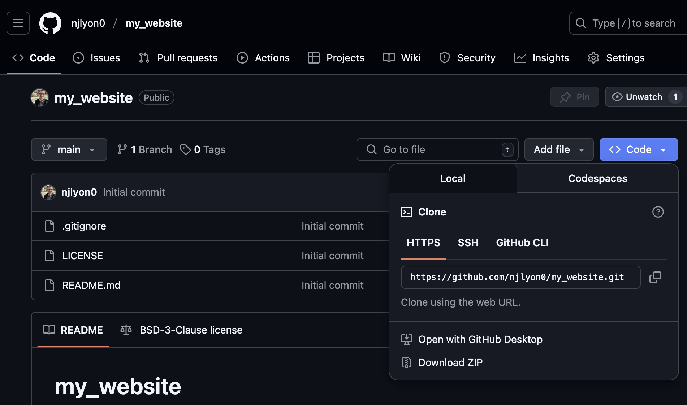
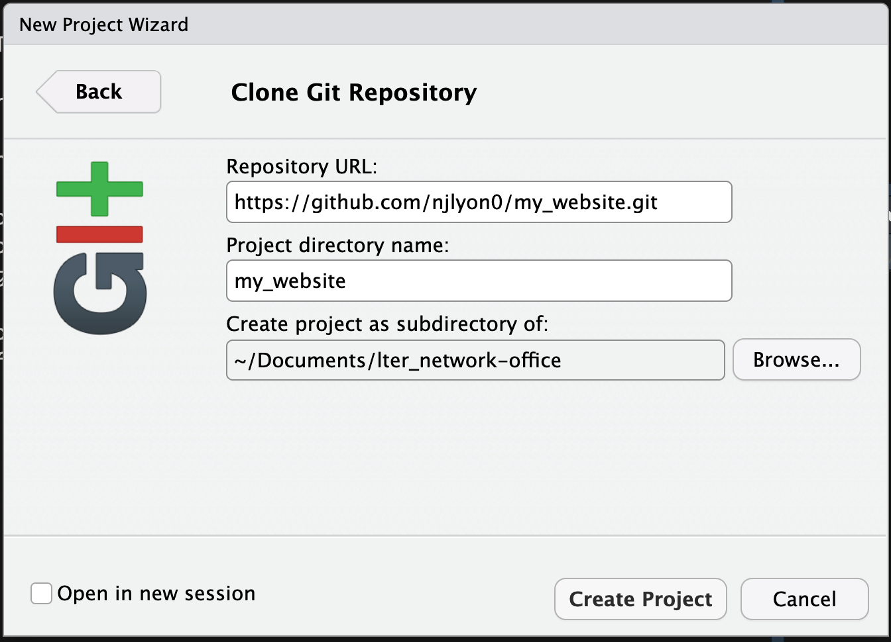
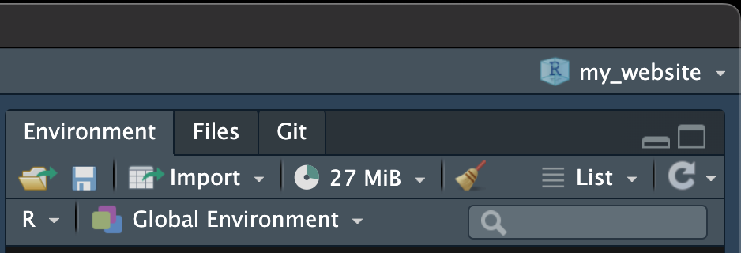

# Ignore unneeded Quarto folders
/.quarto/
docs/Creating a Website
Module Learning Objectives
By the end of this module, you will be able to:
- Use GitHub to make a new repository
- Create a Quarto website
- Edit files hosted on GitHub via RStudio
Make a New GitHub Repository
From your GitHub “Repositories” tab, click the “New” button. It may be either blue or green depending on your GitHub settings.

Pick a name for your repository and add a description. Also, set the repository to “Public”; only public repositories can be turned into websites.
Repository Names & Website URLs
Note that the name you pick for your repository (and who owns it) has a big impact on the URL for the website hosted there! See an example below for how those pieces of information get translated.
github.com/owner/repository owner.github.io/repository
So, think about a repository name that will make your URL informative without being overly long if someone needs to type it manually.
Repository Name / URL Exception
There is one critical exception to the above rule for how the website URL is related to the GitHub repository’s name!
If you name a repository “owner.github.io” (so the repository link is “github.com/owner/owner.github.io”) then the website’s URL is simplified to be the same as the repository name (i.e., “owner.github.io”).
For example, the repository github.com/njlyon0/njlyon0.github.io hosts the website njlyon0.github.io.

Once that is done, scroll down and decide whether to add (1) a README, (2) a .gitignore, and (3) a license. For Quarto websites, you will want a README and a .gitignore but a license is not required. If you are an RStudio user, you should pick the “R” template for your .gitignore. For more information on READMEs see here; for more information on the .gitignore see here.

Once you’ve added these two things, scroll down and click the “Create repository” button. Again, this may be either blue or green.
After a few seconds you should be placed on your new repository’s landing page.
Clone that Repository
Now that you have created a repository, we need to clone it locally so we can create the content we want in RStudio. First, open RStudio and click the project button in the top right corner. If you use RStudio projects already, this will be the name of your current project. If you do not use projects it will say “Project: (None)”.

When you click that button you should see a small menu appear. You should click “New Project…” (the topmost option). Note that if you use projects you’ll see a list of up to the 10 most recent projects filling out the rest of this menu.

This will create a pop-up window in front of RStudio where you can decide what kind of project you want to create. Because we’re cloning from an existing GitHub repository, click “Version Control”.

In the next window, choose “Git”.

Before we address the next dialog window, go back to the landing page for the GitHub repository you’d like to clone. Click the “Code” button and copy the link. The “Code” button will likely be either blue or green. In the example image below we’re using a repository that has just been created but the process is the same for repositories that already have work in them.

Now, return to RStudio and paste the link that you just copied into the top field of the new project pop-up menu. You must also pick a name for your project locally as well as deciding where on your computer you’d like the local copies to live. Feel free to name the project whatever you’d like so that you will be easily able to find it later.

Once you’re happy with your entries to those fields, Click “Create Project”. You’ll know this has worked when the top right of RStudio has whatever name you entered in the second field of the preceding menu. Also, you should now have a “Git” tab in your RStudio.

Start Creating the Website
Now we’ve cloned the GitHub repository where we want the repository to live, we can create the critical website architecture. These steps are best handled sequentially but are semi-independent of one another so see the following numbered sub-headings for more instructions.
1. Add to the .gitignore
Using the “Files” pane of RStudio, open the .gitignore file. Scroll to the bottom and add the following lines beneath whatever is already in there. Those two folders are important in creating a Quarto website but we don’t want Git to track changes to the files that they contain.
Other Good
.gitignore Additions
You might also consider adding the following to your .gitignore. This well help keep your repository free of unneeded contents as the website grows.
# R Project
*.Rproj
# Mac files
.DS_Store2. Create the Website Homepage
Now we’ll make what will become the home page of your website! Create a new Quarto file (“File” “New File” “Quarto Document…”). In the resulting pop-up menu you can leave everything at its default position and click “Create”.
Save that file as index.qmd. Technically it doesn’t matter where in your project folder it lives but typically you’d leave it in the top level folder (i.e., not in a sub-folder).
Note on the File Name
This file must be named exactly as indicated above. All lowercase “index” and it is a .qmd file.
3. Make a YAML File
Now, as discussed in the Quarto Background module, Quarto documents–like many computational notebook files–are controlled by a YAML. In the case of RMarkdown, the YAML is a component of each .Rmd file. Quarto supports that functionality for single-file formatting but also supports a single over-arching YAML file to control the structure of a whole project, in this case: a website!
So, in the Terminal pane of RStudio, run the following command to create the needed type of file with the right name. Note there is a slight difference depending on your operating system so be sure to use the right one!
touch _quarto.yml- 1
-
touchis CLI-speak for ‘create this file’
copy NUL _quarto.yml- 1
- This is CLI-speak for ‘create this file’
This should create a file called _quarto.yml in the top-level of your RStudio project.
4. Draft the YAML
Next, as you did with the .gitignore, use the “Files” pane of RStudio to open this file. Copy/paste all of the following into that file.
project:
type: website
execute-dir: project
output-dir: docs
render:
- "*.qmd"
execute:
freeze: auto
website:
title: "My Website"
repo-url: https://github.com/lter/workshop-quarto
repo-actions: [issue]
navbar:
background: primary
left:
- text: "Home"
href: index.qmd
right:
- icon: github
href: https://github.com/lter/workshop-quarto
page-footer:
center: "Copyright 2025, LTER Network"
background: secondary
format:
html:
toc: true
link-external-newwindow: true
link-external-icon: false- 1
- Feel free to edit this part! It defines the website title that appears on the left side of the navbar with Quarto.
- 2
- Change this link to your GitHub repository’s link
- 3
- Edit this link to the same destination as #2
- 4
- Change this to be the current year and your name
This YAML will tell GitHub (through Quarto) that you want a simple website with a homepage made from the content of index.qmd and a GitHub logo in the top right corner that takes website visitors to the GitHub repository that hosts the website.
5. GitHub Housekeeping
We want this to be a Quarto website so we also need to tell GitHub not to use “Jekyll”. Jekyll is the default website generation tool for GitHub and would involve extra processing we don’t want. We can do this by running the following command line snippet.
touch .nojekyllcopy NUL .nojekyllThere won’t actually be anything in this file but the name is enough for GitHub to change its behavior.
6. Test it Locally
To make sure that everything is set up properly so far, it is good practice to create the website on your computer (i.e., “locally”) before continuing. We can do this with an operating system-agnostic command line snippet.
quarto previewThis should create a new tab in your default browser application that shows a living version of what your website will look like after GitHub starts hosting it. The preview will keep going until you manually stop it (from the Terminal pane in RStudio) so feel free to make tweaks to either _quarto.yml or index.qmd while the preview is running. The preview will update a few moments after you save your edits to either of those files.
7. Render the Website
Once you’re happy with the preview, it’s a good call to completely render the website just to make sure all of your most recent edits are reflected. You can do this with the following command line code.
quarto renderThis may create a docs/ folder and a _freeze/ folder depending on whether you have code chunks in index.qmd (or anything else requiring computing power). docs/ will show up in your file explorer but not the “Git” pane of RStudio because of your edits during step 1. _freeze/ should show up in both locations.
8. Commit & Push!
Once you’ve done the preceding steps, Commit the following things:
- Your changes to the
.gitignore index.qmd_quarto.yml.nojekyll_freeze/folder and all of its contents- If it exists
After you’ve committed these, push them up to the GitHub repository!
Activity - Try it Out
Your Turn!
Let’s take a break while each of you works through the above tutorial on your own computers!
Once everyone has the fundamental structure of a website created and in GitHub we can move on to “deployment” which turns this collection of files into a living website!